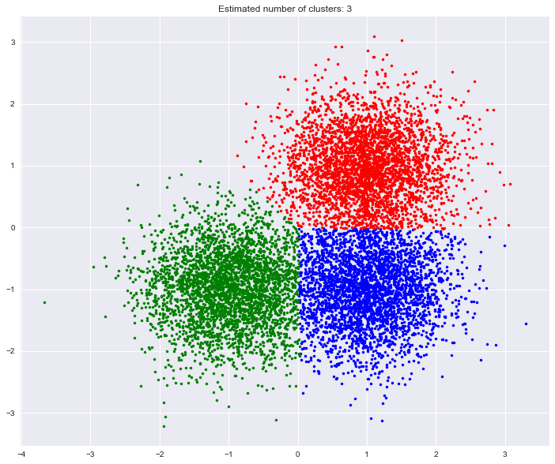

Clustering- Mean-shift
These codes are imported from Scikit-Learn python package for learning purpose
import matplotlib.pyplot as plt import numpy as np import seaborn as sns %matplotlib inline sns.set()
11. A demo of the mean-shift clustering algorithm
Reference:
- Dorin Comaniciu and Peter Meer, "Mean Shift: A robust approach toward
- feature space analysis". IEEE Transactions on Pattern Analysis and
- Machine Intelligence. 2002. pp. 603-619.
from sklearn.cluster import MeanShift, estimate_bandwidth from sklearn.datasets.samples_generator import make_blobs
Generate sample data
centers = [[1, 1], [-1, -1], [1, -1]] X, _ = make_blobs(n_samples=10000, centers=centers, cluster_std=0.6)
Compute clustering with MeanShift
# The following bandwidth can be automatically detected using bandwidth = estimate_bandwidth(X, quantile=0.2, n_samples=500) ms = MeanShift(bandwidth=bandwidth, bin_seeding=True) ms.fit(X) labels = ms.labels_ cluster_centers = ms.cluster_centers_ labels_unique = np.unique(labels) n_clusters_ = len(labels_unique) print("number of estimated clusters : %d" % n_clusters_)
number of estimated clusters : 3
Plot result
import matplotlib.pyplot as plt from itertools import cycle plt.figure(figsize = [12,10]) plt.clf() colors = cycle('bgrcmykbgrcmykbgrcmykbgrcmyk') for k, col in zip(range(n_clusters_), colors): my_members = labels == k cluster_center = cluster_centers[k] plt.plot(X[my_members, 0], X[my_members, 1], col + '.') plt.plot(cluster_center[0], cluster_center[1], 'o', markerfacecolor=col, markeredgecolor='k', markersize=14) plt.title('Estimated number of clusters: %d' % n_clusters_) plt.show()
